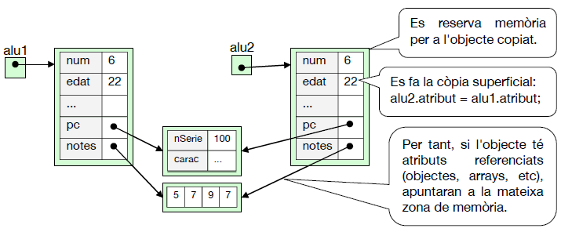
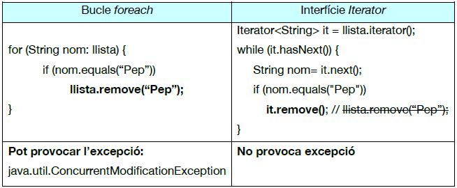
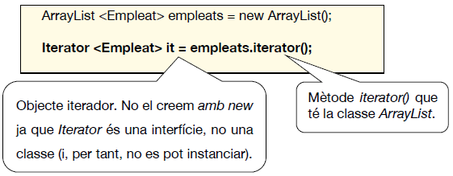

UD10. Interfícies
1. Introducció a les interfícies
En un videojoc de marcianets hi ha molts personatges (objectes) per la pantalla.
Tots seran de la classe Personatge, però són de tipus (subclasses) diferents.
Però ara volem completar-ho fent que algunes de les classes tinguen un comportament en comú.
-
Per exemple, si volem que la classe Nau i la classe Au puguen volar, voldrem que les dos implementen tots els mètodes que ha de tindre un personatges "volador": pujar i baixar.
-
O bé, si volem que les classes Nau, Humà i Alien puguen usar armes, voldrem que les tres implementen tots els mètodes que ha de tindre un personatge "disparador": disparar i defendre.
Podríem pensar en fer una classe Volador amb eixos mètodes però sense implementar-los (serien abstractes) sinó que els implementarien les classes filles. Igualment faríem una classe Disparador. Però en Java una classe només pot ser filla d'1 sola classe. Per a això estan les interfícies.
Podríem dir que una interfície és un "conjunt d'operacions que sabem què han de fer però nom com". Eixe com estarà definit en cada classe que vullga tindre eixe comportament. És a dir, en cada classe que implemente eixa interfície.
Veiem que caldrà una interfície Volador (i altra Disparador), on posarem els mètodes que hauran d'implementar les classes "voladores" (i "disparadores", respectivament). Així com els noms de les classes solen ser substantius (Cotxe, Alumne, Alien...), els noms de les interfícies solen ser adjectius, ja que descriuen el seu comportament (Volador, Disparador, Comparable...).
Els mètodes de les interfícies estaran "buits": només tindran la capçalera dels mètodes, però no estaran implementades. És a dir, seran mètodes abstractes, encara que no es posa la paraula abstract.
Veiem com es creen les interfícies:
- Els mètodes no s'implementen en la interfície, sinó que que els haurà d'implementar cada classe que vullga implementar la interfície Volador. Encara que no es pose, els mètodes són public abstract. El nom de les interfícies convé que tinguen majúscula inicial (igual que les classes).
- En una interfície també es poden definir constants (sempre seran public static final, encara que no es posa).
I veiem ara com una classe implementa eixes interfícies:
- La classe Nau és filla de Personatge. Però també implementa les interfícies Volador i Disparador. Per tant, haurà d'implementar tots els mètodes de les interfícies. Si no ho fem, donarà error de compilació.
En el main també podem definir objectes "voladors" o "disparadors" però hauran de ser instanciats a una classe, mai a una interfície.
| Java | |
|---|---|
- Puc definir un objecte a partir d'una interfície, però l'he d'instanciar a partir d'una classe. Igual que en les classes abstractes.
- D'igual forma puc fer una llista de "voladors", on podré posar tant objectes Nau com Au.
2. Concepte d'interfície
Una interfície és una col·lecció de mètodes abstractes (i atributs constants). Les classes que implementen una interfície hauran de donar cos als mètodes de la interfície.
Recordem que una classe només pot ser filla (extends) d'una sola classe, però pot implementar moltes interfícies:
classDiagram
Classe <|-- SubClasse : extends
Interfície1 <|.. SubClasse : implements
Interfície2 <|.. SubClasse : implementsA més, una interfície pot ser filla (extends) de moltes interfícies:
classDiagram
Interfície1 <|.. Interfície3 : extends
Interfície2 <|.. Interfície3 : extendsUtilitat de les interfícies
- Simular herència múltiple (una classe pot ser filla d'una sola classe, però pot implementar moltes interfícies).
- Obligar a que certes classes utilitzen els mateixos mètodes (per exemple, per a poder ser comparades entre elles) sense estar obligades a tindre una relació d'herència.
- Sabent que una classe implementa una determinada interfície, podrem usar els seus mètodes perquè ja sabrem què fan (ens dóna igual com estiguen implementats).
- Definir un conjunt de constants disponibles per a totes les classes que implementen la interfície (per exemple, per a definir constants d'estat d'un objecte).
2.1. Mètodes per defecte en interfícies
A partir de Java 8 podem posar cos als mètodes en la pròpia interfície.
En eixos casos caldrà indicar, amb default, que eixa és la implementació per defecte per a aquelles classes que implementen la interfície i que no donen cos a eixos mètodes.
Exemple d'interfície amb mètodes per defecte
| Java | |
|---|---|
- Les classes que implementen la interfície Disparador no estaran obligades a implementar el mètode disparar() (ja que té una implementació per defecte).
| Java | |
|---|---|
- La classe Nau implementa els 2 mètodes de la interfície, però no és obligatori. Podria no implementar el mètode disparar() i utilitzar el que té per defecte en la interfície.
3. Diferències entre interfícies i classes
3.1. Interfícies vs classes
3.2. Interfícies VS classes abstractes
Exercici 1. Interfícies
Crea el projecte ProvesInterficies. L'objectiu d'este exercici és poder fer càlculs estadístics (mínim, màxim i suma) de llistes de números, independentment de com estiguen implementades eixes llistes.
-
Crea esta interfície:
-
Crea la classe ArrayListEstad que tinga un ArrayList de doubles (nomenat numeros) i que implemente la interfície Estadistiques. NOTA: quan escrigues l'implements, voràs que dona error. És degut a que encara no has implementat els mètodes de la interfície. Implementa'ls.
-
Crea la classe ArrayEstad, amb un array (un vector, no ArrayList) de doubles (anomenat numeros), que implemente la interfície Estadistiques. NOTA: Quan poses l'implements, clica en la icona de l'error i fes que l'IDE t'implemente els mètodes de la interfície. Després posa el cos dels mètodes.
-
En el main defineix un objecte de cadascuna de les classes anteriors, afegeix valors a les seues llistes i usa els mètodes de la interfície per a mostrar els respectius mínims, màxims i sumes dels seus elements.
Exercici 2
Si volem que els objectes d’una classe es puguen comparar, eixa classe hauria de definir els mètodes esMajor, esMenor i esIgual. En compte d’implementar-los en eixa classe, l’objectiu és definir-los en una interfície i fer que cada classe que necessite poder comparar els seus objectes implemente eixa interfície.
- En el projecte provesInterficies construeix la interfície EsComparable amb els mètodes esMajor, esMenor i esIgual, als quals se’ls passa com a paràmetre un objecte i retornaran un booleà (true si this és major/menor/igual que l’objecte del paràmetre). Com sabràs, en la interfície no s’implementen, sinó que només es posa la capçalera dels mètodes. Posa també un comentari en Javadoc de què fa cada mètode.
- Crea la classe Cotxe (amb matrícula i preu) i que implemente la interfície EsComparable. Un cotxe serà menor que un altre si el preu és menor.
- En el main mostra el més gran de 2 cotxes qualsevol.
4. Les interfícies Comparable i Comparator
4.1. Introducció
Per a ordenar un un array d'enters, podem usar el mètode sort de la classe Arrays (caldrà importar java.util.Arrays):
| Java | |
|---|---|
Si el que volem és ordenar un ArrayList d'enters podem usar el mètode sort de la classe Collections (caldrà importar java.util.Collections):
| Java | |
|---|---|
D'igual forma podríem ordenar una llista (array, ArrayList...) de String, de float, etc. Però què passa si volem ordenar una llista d'elements que no són directament ordenables (comparables), com pot ser una llista de cotxes, alumnes...? Si li aplicàrem el mètode sort, ens donaria error, ja que la màquina virtual "no sap" com comparar eixos objectes.
Per a fer que els objectes d'una classe puguen ser comparats, hem d'indicar un criteri de comparació. És a dir, cal definir quan un objecte de la classe que volem és menor que un altre, quan és major i quan és igual. La interfície EsComparable que hem fet en l'exercici de l'apartat anterior no calia perquè Java ja té unes interfícies semblants, que són les que cal usar, ja que el sort (entre altres) usa els mètodes d'eixes interfícies.
Si volem establir un únic criteri d'ordenació, usarem la interfície Comparable però si volem establir diferents criteris d'ordenació usarem la interfície Comparator.
4.2. La interfície Comparable
L'han d'implementar les classes que vulguen establir un criteri de comparació dels seus objectes (i només un). Esta classe no té mètodes com esMajor, esMenor, esIgual, sinó que l'únic mètode que cal implementar és el mètode compareTo.
- No hem de crear la interfície, ja que ja està inclosa en Java. Vorem que la < T > indica que podrem usar el que s'anomen tipus genèrics.
Este mètode haurà de retornar un número negatiu si this és menor que obj, un número positiu si this és major que obj i 0 si són iguals. Per tant, el mètode ha de retornar un enter. Ens servirà per a comparar dos objectes pel criteri que volem.
Exemple
Suposem que volem comparar (o ordenar) alumnes. Si volem que l'ordre natural dels alumnes és per la seua edat, farem:
| Java | |
|---|---|
O bé, per a no fer el càsting en el compareTo, podem implementar la interfície Comparable indicant que el seu tipus genèric serà
| Java | |
|---|---|
- Un truquet: si el criteri per a comparar és un enter (edat en este cas), el número que retorna compareTo es pot calcular com eixa resta, ja que estarem retornant un número negatiu si this < alu, un número positiu si this > alu i 0 si són iguals. A banda, podem veure com ara ja no cal fer el càsting, ja que el paràmetre del mètode compareTo és de tipus Alumne.
Ara podrem comparar dos objectes de la classe Alumne:
if (alu1.compareTo(alu2) < 0) System.out.println("L'alumne 1 és menor que l'alumne 2");
O bé, ordenar una llista d'alumnes (array o ArrayList) amb el sort, com abans:
| Java | |
|---|---|
- Ara el sort (tan de Collections com d'Arrays) sí que saben com ordenar alumnes, ja que la classe Alumne implementa la interfície Comparable.
És un altre motiu de l'ús d'interfícies: mitjançant la implementació d'interfícies tots els programadors fan servir el mateix nom de mètode (compareTo, sort...) per a fer una mateixa acció (com comparar objectes).
Imagina't que estàs treballant en un equip de programadors i has d'utilitzar una classe que ha codificat un altre programador. Si vols comparar dos objectes d'eixa classe, només veient que implementa la interfície Comparable, ja saps quins mètodes pots usar sense saber com està implementat.
Això facilita el desenvolupament de programes i ajuda a comprendre'ls, sobretot quan intervenen centenars de classe diferents.
Exercici 3. Interfície Comparable
Abans has creat la interfície EsComparable amb 3 mètodes però, com acabem de vore, ja existeix una interfície pareguda a l'API de Java: Comparable.
- Fes que la classe Cotxe implemente la interfície Comparable. Implementa el mètode compareTo fent que un Cotxe siga més xicotet que altre si la matrícula és menor alfabèticament (caldrà criar al compareTo de la classe String).En cas d'igualtat, serà més xicotet el de menor preu.
- Modificia els mètodes de Cotxe que implementen la interfície EsComparable per a que ara es basen en invocacions al mètode compareTo.
Exercici 4
En el main mostra una llista de cotxes. Per a això, crea el toString de Cotxe, i així serà suficient amb System.out.println(llistaCotxes). Ordena la llista i torna-la a mostrar. Comprova que s'ha ordenat bé.
4.3. La interfície Comparator
Amb la interfície Comparable podíem comparar (ordenar) alumnes per un criteri establert: el codi de l'alumne. Però de vegades, en un mateix programa, voldrem establir diferents criteris d'ordenació: ara pel nom, ara pel curs...
Per a fer que els objectes d'una classe puguen ser comparats per diversos criteris, per cada criteri caldrà crear una classe especial que implemente una interfície anomenada Comparator, on definirem el mètode compare (no compareTo), al qual se li passen com a paràmetre els dos objectes a comparar i retornarà un valor negatiu, zero o positiu, igual que el compareTo de la interfície Comparable.
- No l'hem de crear ja que és una interfície inclosa en Java.
Exemple
Volem establir 3 criteris d'ordenació. Per tant, farem 3 comparadors. És a dir, 3 classes que implementen Comparator per a implementar 3 voltes el compare:
| Java | |
|---|---|
| Java | |
|---|---|
- Podem comparar cadenes amb el compareTo de la classe String (ja que String implementa Comparable).
| Java | |
|---|---|
- Ordenarà alumnes segons el curs. Si foren del mateix els ordenaria per l'edat.
Ara, si tenim dos objectes alu1 i alu2, de la classe Alumne, podem comparar-los pel criteri que vullgam. Ho farem creant un objecte de la classe que té el criteri que volem. Així:
| Java | |
|---|---|
O bé, podrem ordenar una llista d'alumnes (array, ArrayList...) amb el criteri que vullgam, també amb el sort, però passant-li com a segon paràmetre un comparador. És a dir: un objecte de la classe que té el criteri que volem:
- Si al sort només li passem la llista, l'ordena pel criteri per defecte (usa el compareTo() de la classe Alumne). Però si li passem també un comparador, ho ordena per eixe criteri (usa el compare() del comparador). En este cas, per curs i edat.
4.4. Ordenant una llista a la inversa
Podem ordenar una llista en sentit invers a l'actual:
| Java | |
|---|---|
També podem ordenar la llista en sentit invers al del compareTo():
I també podem ordenar la llista en sentit invers al d'un comparador:
| Java | |
|---|---|
4.5. Esquema resum d'ús de les interfícies Comparable i Comparator
Una volta tenim això, podrem:
- Comparar 2 objectes pel criteri per defecte o pel comparador que indiquem.
- Ordenar una llista pel criteri per defecte o pel comparador que indiquem.
- Tenim 2 alumnes qualsevol que voldrem comparar.
- Tenim una llista d'alumnes que voldrem ordenar.
- Creem un comparador per cada criteri de comparació que necessitem.
- Comparem 2 alumnes pel criteri per defecte.
- Comparem 2 alumnes pel criteri que indiquem.
- Ordenem la llista pel criteri per defecte.
- Ordenem la llista pel criteri que indiquem.
Exercici 5
Volem tindre una llista de factures i poder-les ordenar per diferents criteris.
-
Crea la class Factura amb els següents atributs, constructor i toString:
- Cal importar java.time.LocalDate. No té constructor. Exemple d'ús: data = LocalDade.of(2024, 12, 31);
-
Fes que el criteri d'ordenació per defecte siga pel número de factura. És a dir, fes que a classe Factura implemente la interfície Comparable.
- Fes altres 2 criteris d'ordenació. És a dir, crea 2 classes que implementen la interfície Comparator:
- Per l'import i, en cas d'igualtat, pel número de la factura.
- Per la data i, en cas d'igualtat, per l'import.
- Crea dos factures i mostra la major segons els 3 criteris.
- Crea un ArrayList de factures, posa-li'n unes quantes i mostra la llista.
- Ordena la llista (i mostra-la) per estos criteris:
- Ordre invers a l'actual.
- Per número de factura ascendent.
- Per número de factura descendent.
- Per import i número de factura, ascendent.
- Per import i número de factura, descendent.
- Per data i import, ascendent.
- Per data i import, descendent.
5. La interfície Cloneable
Si volem copiar un objecte a un altre hi ha diferents maneres:
5.1. Formes de copiar objectes
5.1.1. Còpia amb l'operador =
Recordem que amb alu1 = alu2 no estem creant una còpia sinó que seran 2 variables que apunten al mateix objecte:
En compte d'això, potser volem fer una clonació: una nova zona de memòria per a alu2, on copiem el valor de cada atribut. Segons com ho fem, tindrem 2 possibilitats d'obtindre eixe clon: amb una còpia superficial o amb una còpia profunda:
5.1.2. Còpia superficial (shallow copy)

5.1.3. Còpia profunda (deep copy)
5.2. Formes de fer la còpia superficial (shallow copy)
Veiem les diferents formes de clonar un objecte, a partir de l'exemple anterior.
Suposem que tenim esta classe Alumne (i la classe PC):
| Java | |
|---|---|
- Atributs primitius
- Atributs referenciats
5.2.1. Clonant amb un constructor:
| Java | |
|---|---|
- Creem un constructor de forma que no li passem com a paràmetre els atributs, sinó tot l'objecte Alumne origen a copiar.
- O bé: this(aluOri.num, aluOri.edat, aluOri.nom);
- Ací estem fent còpia superficial.
La forma de crear el clon seria:
| Java | |
|---|---|
5.2.2. Clonant amb un mètode que retorne un objecte clonat:
| Java | |
|---|---|
- Creem un mètode que reserva memòria per a un nou objecte, copia component a component i retorna eixe objecte.
- També estem fent còpia superficial.
La forma de crear el clon seria:
| Java | |
|---|---|
5.2.3. Invocant el clone() de la classe Object (i implementant la interfície Cloneable)
És com el cas anterior (Clonant amb un mètode que retorne un objecte clonat) però en compte de copiar atribut a atribut, només és cridar el clone() d'Object. Però per a fer això cal implementar Cloneable i tractar una exempció:
| Java | |
|---|---|
- Cal implementar Cloneable.
- El super.clone() ens fa la còpia superficial de l'Alumne, sense haver de fer nosaltres la còpia atribut a atribut.
- Cal tractar eixa excepció. Però mai es provocarà ja que hem posat implements Cloneable.
Coses a tenir en compte per a usar el clone() d'Object:
- Des del main no podem invocar el clone() d'Object, ja que és protected. Per tant, caldrà invocar-lo des de la mateixa classe on volem clonar (com hem fet abans).
- El nostre mètode que clona podria dir-se com vullgam, però s'aconsella que sobreescrivim el mètode clone() d'Object. Quan sobreescrivim un mètode:
- Podem donar-li els mateixos permisos (protected en este cas) o més permisos (public), però no menys (private o "res").
- I també podem fer que retorne un objecte d'eixa classe Alumne, en compte d'Object (com hem fet abans).
- Com hem vist, si volem usar el super.clone() cal implementar Cloneable. Ara bé: la interfície Cloneable no té cap mètode.
- Si no té cap mètode, per a què serveix? Només serveix per a que el programador siga conscient que amb la crida al super.clone() s'està fent una còpia superficial, no profunda. I que, per tant, si el programador vol fer-la profunda, caldrà clonar també els atributs referenciats que crega convenients (arrays i/o objectes dins de l'objecte).
5.3. Formes de fer la còpia profunda (deep copy)
Depenent dels casos, a vegades caldrà fer còpia superficial, a vegades profunda i a vegades alguns atributs en superficial i altres en profunda. Veiem 2 formes de fer la deep copy, amb este exemple de la classe Alumne:
5.3.1. Deep copy "manual"
- El super.clone() d'abans copia atribut a atribut.
- Els arrays (i els ArrayList) tenen un mètode clone().
- Si la classe PC no tinguera el clone(), faríem: aluClonat.pc = new PC(); aluCLonat.pc.nSerie = this.pc.nSerie; aluClonat.pc.carac = this.pc.carac;
Compte!
El clone() de l'array (i el de l'ArrayList) és superficial. És a dir, si en compte de tindre un array d'enters tinguérem un array d'objectes, els components dels 2 arrays estarien apuntant als mateixos objectes.
5.3.2. Deep copy "automàtic"
Amb esta forma, "serialitzarem" l'objecte a clonar. És a dir: el convertirem a bytes i després tornarem a posar eixos bytes en l'altre objecte. Ara bé:
- Es farà un deep copy total: de tots els camps i a tots els subnivells. Si volguérem que d'algum atribut es fera còpia superficial, esta no serviria.
- Esta forma no és molt recomanable perquè és molt més lenta que la "manual".
Veiem com seria:
- Cal implementar la interfície Serializable (tampoc té cap mètode) tant en Alumne com en PC.
- S'entendrà millor quan vejam el tema dels fitxers. De moment, només dir que amb eixe codi podríem clonar en profunditat qualsevol objecte.
I clonaríem així:
| Java | |
|---|---|
Exercici 6
Volem clonar cotxes en el nostre projecte.
- Afig a la classe Cotxe l'array revisions, de 5 booleans. Modifica el toString() per a que també mostre les revisions.
- Crea el mètode clone() en la classe Cotxe per a copiar en profunditat (de forma manual).
- En el main crea un cotxe1 i clona'l a un cotxe2. Mostra el cotxe2.
- Per vore que s'ha fet bé la deep copy: després de clonar, modifica una revisió del cotxe1 i torna a mostrar el cotxe2 per vore que no ha canviat.
Exercici 7
Crea la classe Propietari amb un nom i un ArrayList de cotxes. Fes el toString().
- Crea el clone() de Propietari per a còpia en profunditat (de forma manual).
- En el main crea l'objecte propietari1 (amb un nom i alguns cotxes) i clona'l a un propietari2. Mostra les dades del propietari2.
- Comprova que s'ha fet bé la còpia en profunditat: modifica el preu d'un dels cotxes del propietari1 i mostra les dades del propietari2. No hauria d'haver canviat el preu d'eixe cotxe en el propietari2.
6. Les interfícies Iterator i Iterable
6.1. Introducció
Per a recórrer una llista es pot fer de diverses maneres. Hi ha dos formes de fer-ho sense usar un comptador: amb un bucle foreach o amb un iterador (usant la interfície Iterator). Per exemple, si tenim que llista és un ArrayList de strings:
Veiem que el foreach és més senzill però si esborrem un element de la llista mentre la recorrem amb el foreach pot donar error ja que és "com si ens furtaren les rajoles per on caminem". El mètode remove() d'Iterator ho resol. No el remove() de ArrayList, sinó el de la interfície Iterator:

Per tant, si volem esborrar algun element de la llista mentre la recorre, haurem de recórrer-la amb un iterador.
Veiem-ho detalladament:
6.2. La interfície Iterator
La interfície Iterator proporciona uns mètodes per a accedir seqüencialment als elements d'una col·lecció:
| Java | |
|---|---|
Com Java té moltes col·leccions distintes (ArrayList, HashSet, array, Queue...), es pretén recórrer de la mateixa forma eixes col·leccions (o altres que ens fem nosaltres).
A. PRIMER CAL DEFINIR-NOS UN ITERADOR SOBRE LA LLISTA
Per exemple:

Sintaxi:
B. RECORREM LA LLISTA AMB L'ITERADOR
És convenient fer ús d'eixe objecte temporal (e) per a no cometre este error:
Exercici 8
Crea un ArrayList de cotxes i posa'n alguns. Després, recorre la llista de forma que, en cada cotxe, després de mostrar les dades, es preguntarà per teclat si volem esborrar eixe cotxe. En cas afirmatiu, l'esborrarem. Caldria fer-ho amb un iterador (si no, hauria de donar error).
Hem vist que, amb la interfície Iterator, podem recórrer els elements d'un ArrayList (o d'un HashSet...) ja que estes classes ens proporcionen un iterador:
| Java | |
|---|---|
És a dir: la classe ArrayList "es pot iterar": ens proporciona un iterador. Però també voldríem fer que una classe nostra, que incloga una llista d'elements (independentment de si està implementada amb un ArrayList, un array, etc), també "puga ser iterada": que també ens proporcione un iterador. Per exemple, una classe Departament pot tindre dins una llista d'empleats, i voldríem fer:
I després treballar amb eixe it com ho hem fet abans (amb hasNext() i next()).
Per a poder fer això caldrà fer el següent:
| Java | |
|---|---|
- La classe Departament tindrà una llista d'empleats.
- La classe Departament proporcionarà l'iterador per a poder recórrer la llista dels seus empleats.
Ara podem recórrer la llista dels empleats d'un departament amb eixe iterador, de la mateixa forma que abans (amb hasNext() i next()).
| Java | |
|---|---|
- El departament ens proporciona l'iterador per a poder recórrer la llista dels seus empleats.
- Recorrem els empleats amb els mètodes d'Iterator, sense saber com està implementada la llista d'empleats.
Als exemples anteriors, la llista d'empleats del departament és un ArrayList i, per tant, el Departament podia proporcionar l'iterador d'eixe ArrayList. Però si la llista d'empleats és un array, este no disposa d'iteradors. Per tant, l'agurem de fer nosaltres. Així:
I ara vorem que per a recórrer els empleats del Departament implementats amb un array és exactament igual que recórrer els empleats implementats amb ArrayList:
| Java | |
|---|---|
Veiem altre exemple. Ara suposem que un Departament només puga tindre 3 empleats i que la llista està implementada amb 3 variables. Ara la classe que implemente l'iterador d'empleats hhaurà de ser diferent:
I, des de fora, la forma de recórrer els empleats del departament, seria exactament igual que abans: fent ús de hasNext(), next() i, si cal, remove().
Si volguérem recórrer els empleats de la classe Departament de 2 formes distintes (ascendent i descendent, per exemple), haurem d'implementar eixos 2 criteris:
| Java | |
|---|---|
6.3. La interfície Iterable
Als exemples anteriors hem fet que eixa classe Departament siga "iterable": que proporcione un iterador per a recórrer els seus elements. Però és més coherent si eixa classe Departament implementa la interfície Iterable (no s'ha de cofondre amb Iterator), que només té un mètode (iterator()) que retorna l'iterador:
Fent que Departament implemente Iterable, estem dient que, des de fora, podrem obtindre un iterador de la classe invocant el mètode iterator(), i que podrem usar els mètodes hasNext(), next() i remove(), sense la necessitat de saber si la llista d'empleats està implementada com un ArrayList, un array o d'alguna altra forma.
Resumint:
Si volem poder recórrer els elements d'una classe, farem que eixa classe implemente la interfície Iterable. Això ens obligarà a implementar el mètode iterator(). Este retornarà l'iterador d'un ArrayList, etc, o bé haurem de crear una classe que implemente la interfície Iterator.
Exercici 9. Llista d'alumnes
-
Crea la classe Alumne amb estos atributs i mètodes:
- Atribut nom: nom de l'alumne.
- Constant QAVA (quantitat avaluacions): 3
- Constant QEXER (quantitat d'exercicis per avaluació): 5
- Matriu notes: de QAVA avaluacions per QEXER exercicis.
- Constructor: se li passa el nom de l'alumne i ha d'inicialitzar cada nota a -1 (significa que no estan posades les notes).
- Mètode posaNota, per a posar una nota a l'alumne (paràmetres: núm. avaluació, núm. exercici i la nota).
-
Volem poder recórrer la matriu per avaluacions (per a treure mitjanes, màxim...). Per a això contruirem un iterador de les notes de l'alumne:
- Fes que la classe Alumne implemente la interfície Iterable.
- Implementa el mètode iterator(), que retornarà un objecte iterador a partir d'una classe que t'hauràs de crear dins d'Alumne.
- Crea la classe IteradorNotes que implemente Iterator. Caldrà implementar el hasNext() i next() tenint en compte que el recorregut el volem per files (avaluacions).
-
En el main fes el següent:
- Crea un alumne.
- Posa-li algunes notes.
- Recorre les notes de l'alumne amb un iterador per a obtindre a seua nota mitja, quantes notes té aproevades i quantes suspeses. Mostra-ho per pantalla.